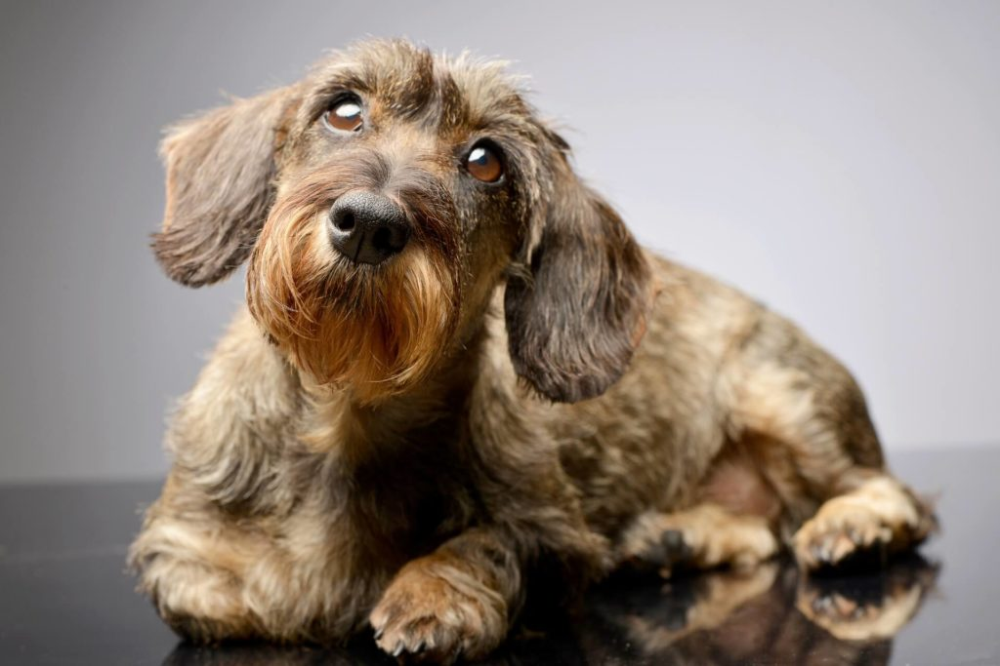
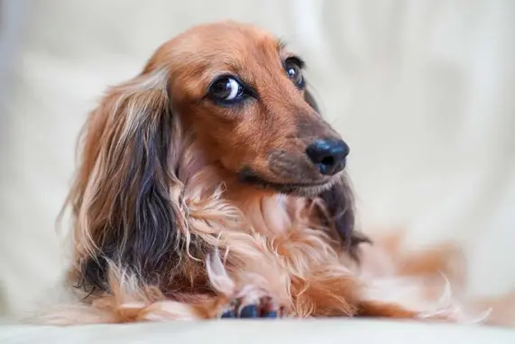
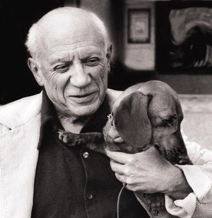
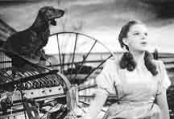

Gazdiknak tacskó A tacskó változatainak eredete a régmúlt időkbe nyúlik vissza. Egyiptomban találtak olyan emlékeket, melyeken megtalálható ez a rövid lábú, hosszú hátú kutya. Származása vitatott; egyesek szerint a francia bassetek (szó szerint: alacsony kutya) rokona. Közkedvelt elnevezése a dakszli, amely az eredeti német névből, a dachshundból ered, amely borzkutyát jelent. Ez nem véletlen, hiszen zsákmányát a föld alá is követi. A tacskók remekül ásnak, így szinte lehetetlen kifutóban tartani őket. A tenyésztése során mind könnyedebbé és elegánsabbá vált fajta nagy népszerűségnek örvend.

A rövid szőrű tacsik legnagyobb előnye, hogy a bundájuk nem igényel kifejezett törődést (legyen szó kefélésről, vagy nyírásról), habár egy-egy fürdetés nem árt nekik a hónapok során. Szőrük tapintása selymes, és nem jellemző rájuk a szőrhullás. A rövid bunda hátránya, hogy télen nem véd úgy a hidegtől, így, ha egy hűvösebb napon indultok sétára kutyusoddal, ne felejts ráadni egy meleg kiskabátot. A tacskó kutyaruhák kiválasztása szintén egy mulatságos és izgalmas elfoglaltság lehet a jövendőbeli gazdik számára. Szintén fontos, hogy tarts egy takarót a kutyusod alvóhelyén, így ha esetleg fázna, könnyedén felmelegedhet a paplan alatt.
A nevükből is kiderül, hogy ezeknek a kutyáknak durvább tapintású a bundájuk, ami szintén igényel némi gondozást, igaz, nem olyan rendszerességűt, mint a hosszú szőrű tacsiké. A heti egyszeri bundaápolás mellett egy hasonló személyiségű kutyát kapunk, mint a rövidszőrű tacskó kutyusoké. Vicces kinézetükhöz (vastag, erős szemöldök és szakállka), egy tréfás, energikus alaptermészet társul. Haumann Máté, a tehetséges ifjú színész is egy szálkás szőrű tacskóval osztja meg az életét, s a dolog szépsége, hogy a mi Les kutyánk az a szerencsés, aki Máté idegeit borzolhatja.
Ezek a kutyusok rendkívül puha és hosszú szőrükről ismertek, sokak szerint a személyiségük is illeszkedik megjelenésükhöz. Lógó füleik csak tovább fokozzák jámbor kinézetüket, azonban a hosszú szőr bizony gondozást is igényel. A mindennapos fésülés elengedhetetlen része az ápolt bunda megtartásának, amihez mi ezt a szőrtelenítő kesztyűt ajánljuk.
Haumann Máté, a tehetséges ifjú színész is egy szálkás szőrű tacskóval osztja meg az életét, s a dolog szépsége, hogy a mi Les kutyánk az a szerencsés, aki Máté idegeit borzolhatja.
Onaparte Napóleon rajongott értük, "törpe oroszlánoknak" titulálta őket és egyben saját magára is utalt, hiszen a Napóleon név a "nabot" és a "lion" szavakból eredeztethető. Egyik kutyáját Korzikán mindenki arról ismerte, hogy a parányi testben hatalmas egót rejteget, amely viszont azonnal előtört, ha egy másik kutya került a közelébe.
Óz, a nagy varázsló főhősének, Judy Garlandnak kutyatársa eredetileg nem egy terrier, hanem egy törpetacskó volt, akit Ottónak hívtak.
elérhetőség: dajkavivien04@gmail.com